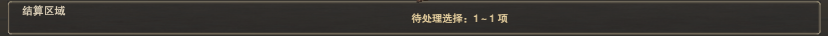

选中与取消动画
选中 180 毫秒，取消 140 毫秒；动效示意采用 2 倍尺寸。禁用态不响应。
当前结算区参考

实际资产：GameplayInteractionHud / Bottom Bar Content / Resolution Summary Slot。高度 60，首选宽度 1424，宽度由现有横向布局分配；场景覆盖没有另改高度。
保持原标题与摘要的锚点区域，深色底兼容现有浅色文字；只新增九宫格底图，不改现有结算逻辑。此页仍为资产预览，尚未替换正式场景。
主体已认可并记录完成；仅修复勾选动效与当前结算区消息适配，其他贴图未改。
选中 180 毫秒，取消 140 毫秒；动效示意采用 2 倍尺寸。禁用态不响应。

实际资产：GameplayInteractionHud / Bottom Bar Content / Resolution Summary Slot。高度 60，首选宽度 1424，宽度由现有横向布局分配；场景覆盖没有另改高度。
保持原标题与摘要的锚点区域，深色底兼容现有浅色文字；只新增九宫格底图，不改现有结算逻辑。此页仍为资产预览，尚未替换正式场景。